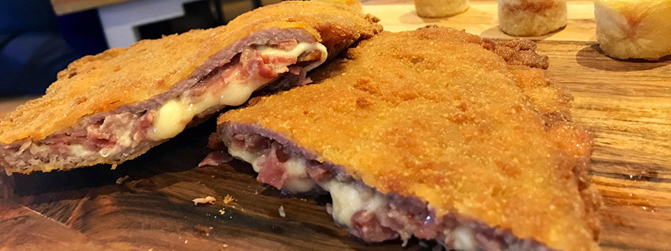

Platos típicos
- Fabada asturiana
- Cachopo
- Caldereta de cordero
- Postres tradicionales
- Arroz con leche
- Frixuelos
- Embutidos artesanos
- Quesos asturianos
- Fabada
- Plato típico a base de fabes, chorizo, morcilla y tocino.
- Cachopo
- Filetes empanados rellenos de jamón y queso, acompañados de patatas.
- Arroz con leche
- Postre dulce cocido lentamente con canela y cáscara de limón.
Comparativa de platos típicos
| Plato |
Tipo |
| Fabada |
Plato principal |
| Cachopo |
Plato principal |
| Arroz con leche |
Postre |
| Frixuelos |
Postre |

Cachopo asturiano
Vídeo sobre gastronomía